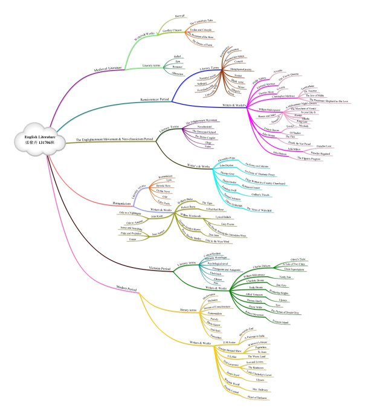
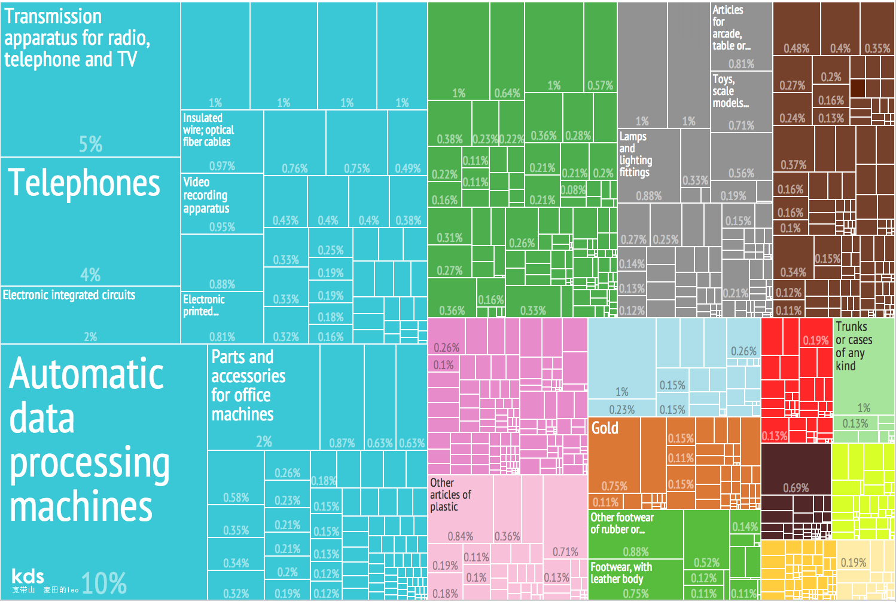
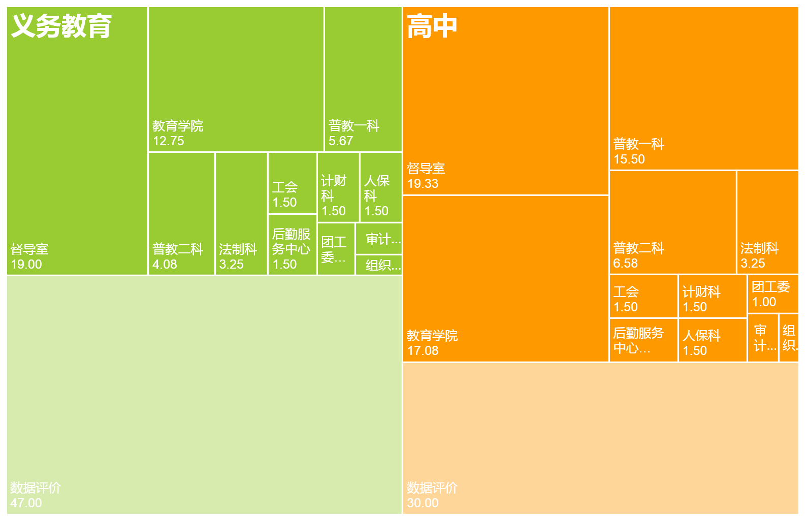
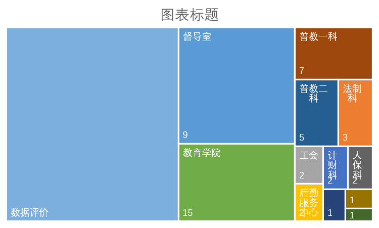
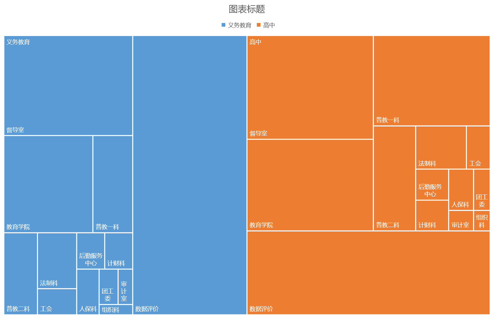

微软在2015年下半年发布了Office 2016系列，似乎延续了每三年一个版本的传统，算是一家不怎么跳票的公司吧？说起改动，最直观的的就是界面上的变化，比如在页面顶部根据不同的部件染上了不同的颜色（不得不提一句，看着微软的配色方案总觉得口味比较重...）。还有在默认中文字体上，再也不是宋体当道了，而是比较奇怪的等线（原因不明）。
好吧，盐归正传。Office升级到2016版本，首先就看到了图表方面的变动，传统的图表没有太大变化，倒是加了几个新的图表，看来是时候展现真正的技术了...
牛逼什么的就不吹了，还是放点干货吧。以下进入 Excel2016系列之——树状图。
What is Treemap？
首先，允许我装个逼，写个英文，希望不犯法。其实标题里的treemap就是树状图的英文名。
你可能会觉得它长这样：

也可能会觉得它长这样：

图2 树状图幻想b这种时候，我只能说，你太天真了！
其实他长这样：

图3 树状图这不是坑爹呢吗。哪里长得像树了？
但是很遗憾的告诉你，歪果仁就是这么想的...
其实，反过来想想，这确实也是一种表现数据的形式，难道不是么？
How to Make a Treemap by Excel?
扯了一大段犊子，原谅我放荡不羁废话多。这里正式进入正片环节。其实也就是怎么做树状图，以及在什么时候用树状图比较好。
首先，先要理解树状图，请允许我抄一段。
Treemap is a space-constrained visualization of hierarchical structures. It is very effective in showing attributes of leaf nodes using size and color coding. Treemap enables users to compare nodes and sub-trees even at varying depth in the tree, and help them spot patterns and exceptions.
Treemap was first designed by Ben Shneiderman during the 1990s. For more information, read the historical summary of treemaps, their growing set of applications, and the many other implementations. Treemaps are a continuing topic of research and application at the HCIL.
反正大意就是树状图在反映不同类别以及不同层次的数据方面相关较好，能够显示不同数据在不同根节点和子节点上的表现，并帮助发现特定的规律或是异常情况。
从实际应用的语言来说，只要是算百分比，尤其类目和层次关系较多的情况下，树状图会是你最好的助手。可以看看这么一个例子。

图4 各部分评价权重树状图图4是在撰写《2014-15学年学校办学绩效评估报告》（其实也就是三级四类）的时候，作为反映不同部门在绩效评价中重要性和参与度。很直观的就可以看到除去数据评价的部分，督导室和教育学院手握学校的身杀大权，果断成为面积裱。相对的，有些部门连名字都显示不全了，更不要说是权重分了...
图4是最终的表现形式，实际上，作图是需要步骤的，首先就是组织数据：
最初，数据是这个样子的：
| 部门 | 评价项目数 | 中小学 | 高中 |
|---|---|---|---|
| 督导室 | 9 | 19.00 | 19.33 |
| 法制科 | 3 | 3.25 | 3.25 |
| 工会 | 2 | 1.50 | 1.50 |
| 后勤服务中心 | 2 | 1.50 | 1.50 |
| 计财科 | 2 | 1.50 | 1.50 |
| 教育学院 | 15 | 12.75 | 17.08 |
| 普教二科 | 5 | 4.08 | 6.58 |
| 普教一科 | 7 | 5.67 | 15.50 |
| 人保科 | 2 | 1.50 | 1.50 |
| 审计室 | 1 | 0.75 | 0.75 |
| 团工委 | 1 | 1.00 | 1.00 |
| 组织科 | 1 | 0.50 | 0.50 |
| 数据评价 | 47.00 | 30.00 |
如果直接做树状图会变成这样：

图5 excel树状图示例a仔细看来，这里有两个问题：
- 所有部门被分为不同类。
- 现实的数据是评价项目数，但是实际的区块内显示的是部分评分情况（总之，全乱套了）。
那么，如何才能得到像图4那样的结果呢？
只需要把数据变成这样：
| 评价对象 | 评价方式 | 评价部门 | 权重 |
|---|---|---|---|
| 义务教育 | 部门评价 | 督导室 | 19.00 |
| 法制科 | 3.25 | ||
| 工会 | 1.50 | ||
| 后勤服务中心 | 1.50 | ||
| 计财科 | 1.50 | ||
| 教育学院 | 12.75 | ||
| 普教二科 | 4.08 | ||
| 普教一科 | 5.67 | ||
| 人保科 | 1.50 | ||
| 审计室 | 0.75 | ||
| 团工委 | 1.00 | ||
| 组织科 | 0.50 | ||
| 数据评价 | 数据评价 | 47.00 | |
| 高中 | 部门评价 | 督导室 | 19.33 |
| 法制科 | 3.25 | ||
| 工会 | 1.50 | ||
| 后勤服务中心 | 1.50 | ||
| 计财科 | 1.50 | ||
| 教育学院 | 17.08 | ||
| 普教二科 | 6.58 | ||
| 普教一科 | 15.50 | ||
| 人保科 | 1.50 | ||
| 审计室 | 0.75 | ||
| 团工委 | 1.00 | ||
| 组织科 | 0.50 | ||
| 数据评价 | 数据评价 | 30.00 |
然后选中作图：

图6 excel树状图示例b这样就可以做出图6了，至于再之后的配色和重点突出等方面，就仁者见仁，智者见智了。以我的水平，也就改成图4了。同志们自己努力吧。
结束语：终于可以收尾了，484觉得我有标题党的嫌疑？其实不然，第一次看到树状图的时候，我就觉得它很像三国初期，群雄逐鹿中原的样子，如果把当时的中国地图拉伸一下，变成矩形的，不就变成树状图了么？然后如果我们利用一张张树状图是不是也能推演一下三国群雄互相吞并的进程呢（比如，先规定三国群雄的颜色，然后把分割成各个时间点，最后只要呈现每个时间点上的颜色块就可以了，最终可以从五光十色变成三色，再到一色）。
或许，树状图本身并不具备这样的故事和含义，不过我觉得其实是一种启发，生活中处处是智慧，数据可视化的图表皆可从生活中找到灵感和资源。